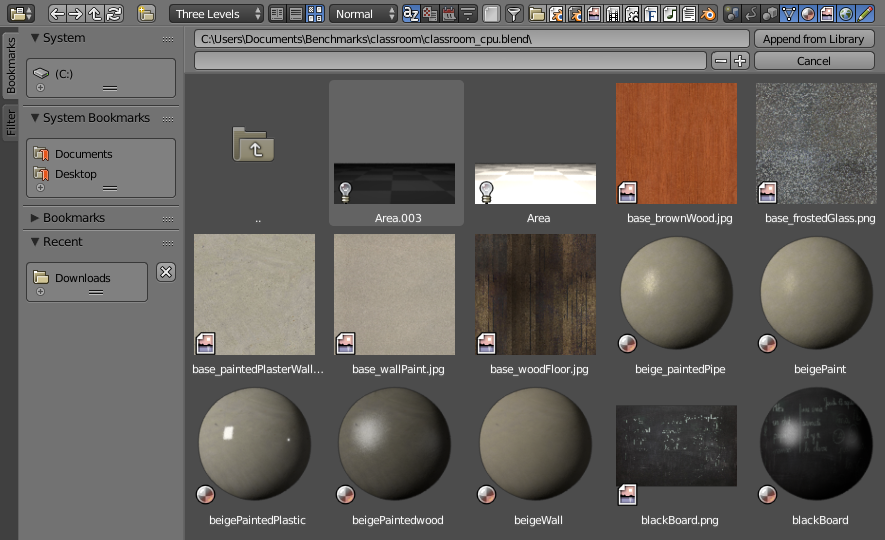

数据预览¶

文件浏览器预览。¶
文件浏览器支持许多类型文件的预览。包括：
图像和视频格式
Blend 文件
内部 数据块
字体
数据块¶
创建和删除预览¶
参考
- 编辑器
信息编辑器
- 菜单
可以通过 创建和删除预览。
- 刷新数据块预览
确保数据块预览可用并且是最新的。
- 批量生成预览
为选定的blend文件生成预览。
- 场景
为场景生成预览。
- 组
为组生成预览。
- 物体
为物体生成预览。
- 材质/纹理/ ...
为材质，纹理，图像等生成预览。
- 信任的Blend文件
为blend文件启用执行Python。
- 保存备份
如果blend文件在生成预览时损坏，则启用备份。当你担心大文件或可以禁用以节省驱动器空间时，这可能很有用。
- 清除数据块预览
清除数据块预览。
- 批量清除预览
清除所选blend文件的预览。
- 场景
清除场景预览。
- 组
清除组的预览。
- 物体
清除物体的预览。
- 材质/纹理...
清除材质，纹理，图像等的预览。
- 信任的Blend文件
为blend文件启用执行Python。
- 保存备份
如果blend文件在生成预览时损坏，则启用备份。